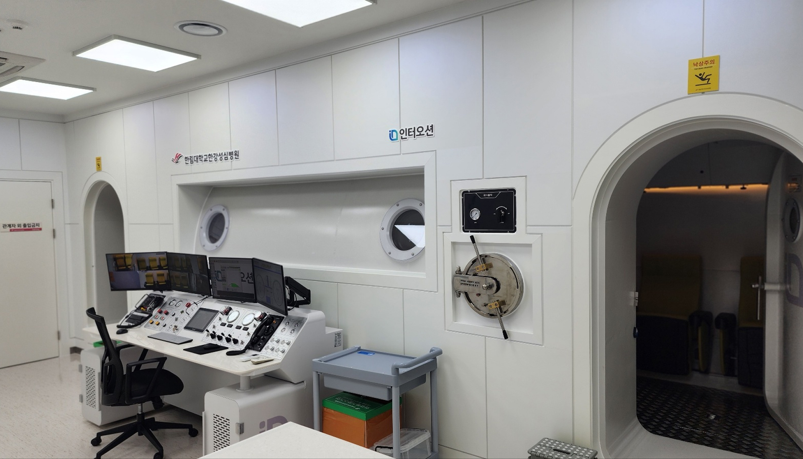

제조기술
MANUFACTURING TECHNOLOGY
PRODUCTION & QUALITY
기준을 지키는
생산 · 품질관리
원자재 입고부터 출고까지 단계별 기준에 따라 생산하고 검사합니다.
제작 이력과 검사 결과를 기록해 일정한 품질을 유지합니다.

4 STEP단계별 품질 검사
PROCESS
생산 · 품질관리 과정
-
STEP 01
원자재 입고 검사
소재 규격과 외관을 확인하고 입고 이력을 관리합니다.
-
STEP 02
공정 관리
작업 기준서에 따라 생산하고 공정마다 중간 점검을 기록합니다.
-
STEP 03
완제품 검사
기밀 · 성능 시험과 외관 · 치수 확인으로 최종 품질을 점검합니다.
-
STEP 04
출고와 사후관리
출고 전 점검 후 품질 이력을 보관하고 A/S에 대응합니다.
CHECK POINT
주요 검사 항목
제품마다 정해진
항목을 빠짐없이 확인합니다.
-
01
소재 상태
원단 · 부자재 규격과 결함 여부
-
02
접합 · 봉제
접합부 마감과 봉제 상태
-
03
기밀 시험
압력 · 방수 등 기밀 성능
-
04
부품 작동
밸브 · 지퍼 등 부품 작동 상태
-
05
치수 · 외관
주문 사양과 치수 · 외관 일치 여부
-
06
이력 기록
검사 결과와 제작 이력 보관